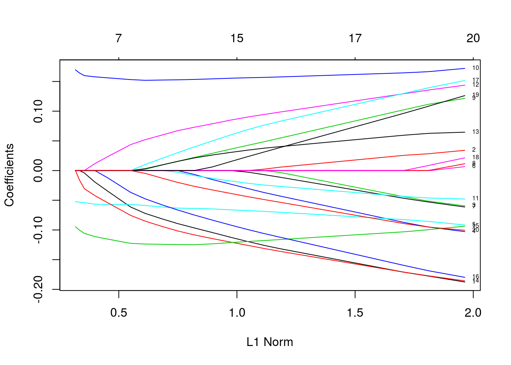
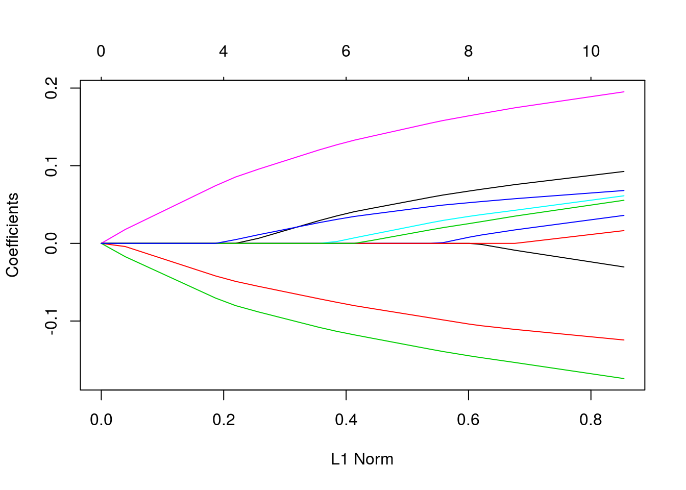
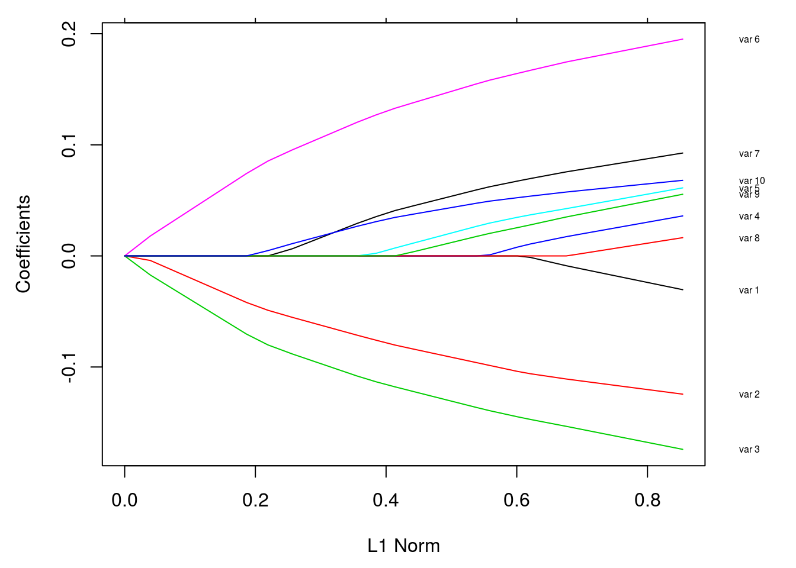
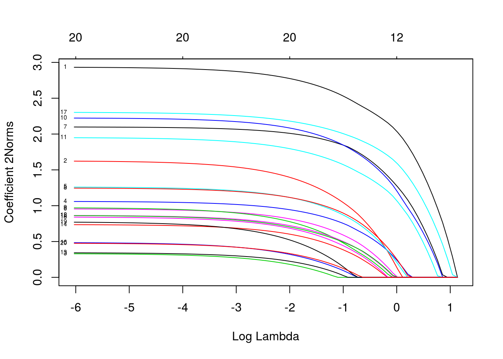
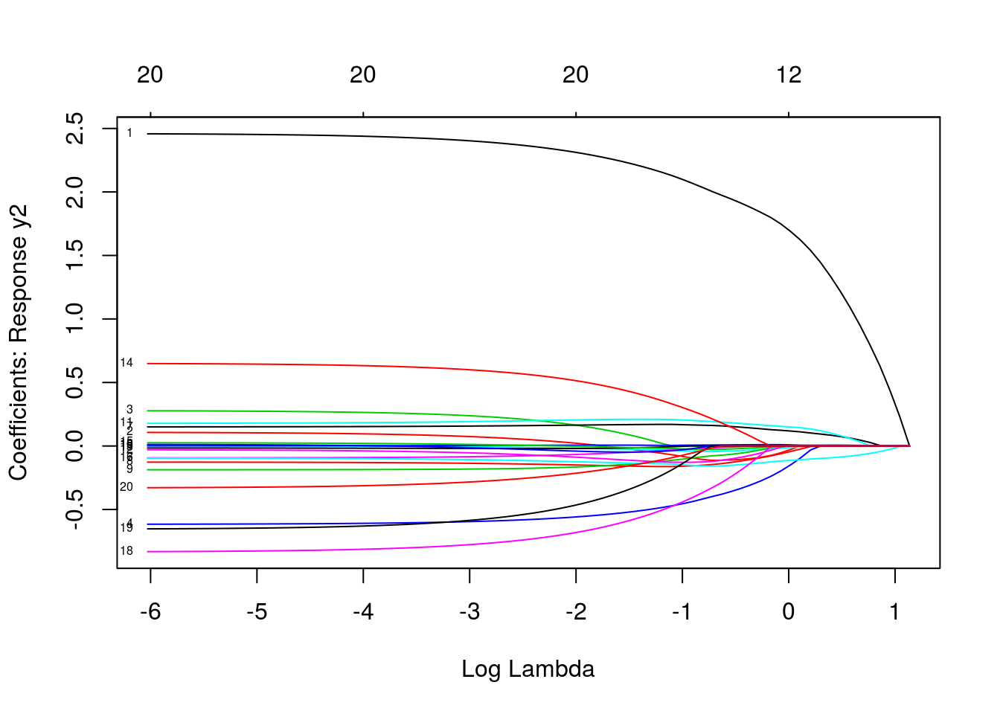
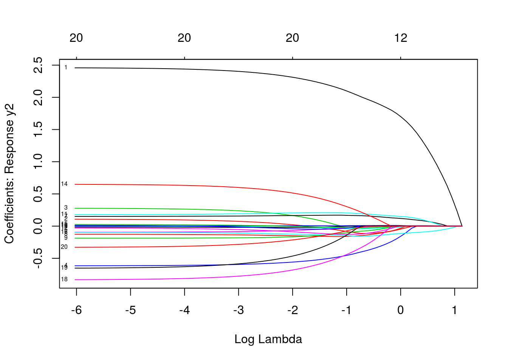
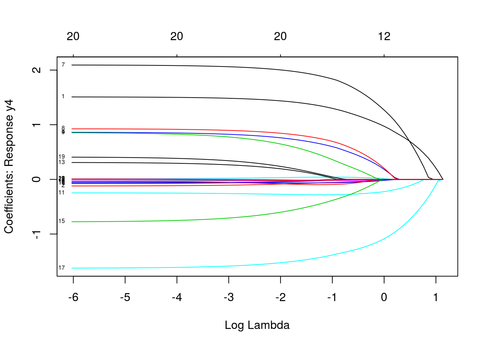
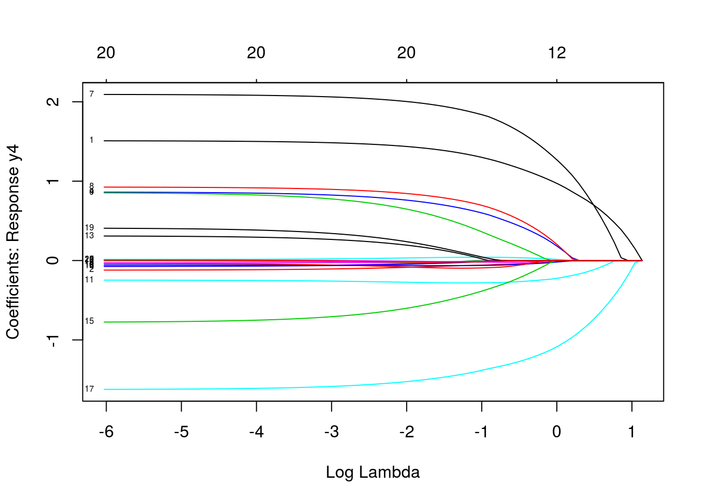

Glmnet for Linear Regression
weiya
April 27, 2017 (update: February 27, 2019)
fit
library(glmnet)
x = matrix(rnorm(100*20), 100, 20)
y = rnorm(100)
fit = glmnet(x, y, alpha = 0.2, weights = c(rep(1,50),rep(2,50)), nlambda = 20)
print(fit)##
## Call: glmnet(x = x, y = y, weights = c(rep(1, 50), rep(2, 50)), alpha = 0.2, nlambda = 20)
##
## Df %Dev Lambda
## [1,] 0 0.00000 1.3760000
## [2,] 2 0.06964 0.8472000
## [3,] 6 0.14930 0.5217000
## [4,] 10 0.21410 0.3213000
## [5,] 13 0.26790 0.1979000
## [6,] 16 0.29910 0.1219000
## [7,] 16 0.31450 0.0750500
## [8,] 16 0.32120 0.0462200
## [9,] 17 0.32400 0.0284600
## [10,] 18 0.32530 0.0175300
## [11,] 19 0.32590 0.0108000
## [12,] 20 0.32620 0.0066480
## [13,] 20 0.32630 0.0040940
## [14,] 20 0.32630 0.0025210
## [15,] 20 0.32630 0.0015530
## [16,] 20 0.32630 0.0009563
## [17,] 20 0.32630 0.0005889plot
- norm
- lambda
- dev
plot(fit, xvar = "lambda", label = TRUE)
plot(fit, xvar = "dev", label = TRUE)
extract coefficients
exact = TRUE: refit with theswhich not included in the original fitexact = FALSE: uses linear interpolation to make predications for values ofs
any(fit$lambda == 0.5) # false## [1] FALSE#coef.exact = coef(fit, s = 0.5, exact = TRUE)
#used coef.glmnet() or predict.glmnet() with `exact=TRUE` so must in addition supply original argument(s) x and y and weights in order to safely rerun glmnet
coef.exact = coef(x=x, y=y, weights = c(rep(1,50),rep(2,50)), fit, s = 0.5, exact = TRUE)
coef.apprx = coef(fit, s = 0.5, exact = FALSE)
cbind2(coef.exact, coef.apprx)## 21 x 2 sparse Matrix of class "dgCMatrix"
## 1 1
## (Intercept) -0.09558839 -0.0962268209
## V1 . .
## V2 . 0.0008620452
## V3 . .
## V4 0.02064205 0.0208827476
## V5 0.01829474 0.0188439820
## V6 . 0.0010590269
## V7 . .
## V8 . .
## V9 -0.11159124 -0.1122539451
## V10 -0.10672665 -0.1070586065
## V11 -0.03583638 -0.0364817443
## V12 . .
## V13 . -0.0018652429
## V14 . .
## V15 . .
## V16 . .
## V17 . .
## V18 . -0.0011403887
## V19 -0.01912082 -0.0191996255
## V20 . .predictions
- response
- coefficients
- nonzero
predict(fit, newx = x[1:5, ], type = "response", s = 0.05)## 1
## [1,] 0.4287051
## [2,] -0.5522176
## [3,] -0.3379823
## [4,] -0.9540268
## [5,] 0.1122584cross-validation
cvfit = cv.glmnet(x, y, type.measure = "mse", nfolds = 20)
# plot(cvfit, xvar = "norm", label = TRUE)
# #####
# Question: plot is not for cvfit??
# #####parallel
require(doMC)
registerDoMC(cores = 4)
X = matrix(rnorm(1e4 * 200), 1e4, 200)
Y = rnorm(1e4)
system.time(cv.glmnet(X, Y))## user system elapsed
## 3.376 0.000 3.380system.time(cv.glmnet(X, Y, parallel = TRUE))## user system elapsed
## 3.792 0.120 1.563coef and predict for cv.glmnet
cvfit$lambda.min## [1] 0.1070167coef(cvfit, s = "lambda.min")## 21 x 1 sparse Matrix of class "dgCMatrix"
## 1
## (Intercept) -0.09456403
## V1 .
## V2 .
## V3 .
## V4 0.01136755
## V5 .
## V6 .
## V7 .
## V8 .
## V9 -0.13276151
## V10 -0.10992192
## V11 -0.11022062
## V12 .
## V13 .
## V14 .
## V15 .
## V16 .
## V17 .
## V18 .
## V19 -0.01983920
## V20 .predict(cvfit, newx = x[1:5, ], s = "lambda.min")## 1
## [1,] 0.23279558
## [2,] -0.40358392
## [3,] -0.08862785
## [4,] -0.48245766
## [5,] -0.09485886control the folds
foldid = sample(1:10, size = length(y), replace = TRUE)
cv1 = cv.glmnet(x, y, foldid = foldid, alpha = 1)
cv.5 = cv.glmnet(x, y, foldid = foldid, alpha = 0.5)
cv0 = cv.glmnet(x, y, foldid = foldid, alpha = 0)par(mfrow = c(2, 2))
plot(cv1); plot(cv.5); plot(cv0)
plot(log(cv1$lambda), cv1$cvm, pch = 19, col = "red", xlab = "log(Lambda)", ylab = cv1$name)
points(log(cv.5$lambda), cv.5$cvm, pch = 19, col = "grey")
points(log(cv0$lambda), cv0$cvm, pch = 19, col = "blue")
legend("topleft", legend = c("alpha= 1", "alpha= .5", "alpha 0"), pch = 19, col = c("red", "grey", "blue"))
coefficients upper and lower bounds
tfit = glmnet(x, y, lower = -.7, upper = .5)
plot(tfit)
penalty factors
p.fac = rep(1, 20)
p.fac[c(5, 10, 15)] = 0
pfit = glmnet(x, y, penalty.factor = p.fac)
plot(pfit, label = TRUE)
customizing plots
set.seed(101)
x = matrix(rnorm(1000), 100, 10)
y = rnorm(100)
vn = paste("var", 1:10)
fit = glmnet(x, y)
plot(fit)
par(mar = c(4.5,4.5,1,4))
plot(fit)
vnat = coef(fit)
vnat = vnat[-1, ncol(vnat)]
axis(4, at=vnat, line = .5, label = vn, las = 1, tick = FALSE, cex.axis = 0.5)
where las = 0, 1, 2, 3; - 0: parallel to the axis; - 1: horizons; - 2: perpendicular to the axis - 3: vertical
multiresponse gaussian family
data(MultiGaussianExample)
mfit = glmnet(x, y, family = "mgaussian")
plot(mfit, xvar = "lambda", label = TRUE, type.coef = "2norm")
plot(mfit, xvar = "lambda", label = TRUE, type.coef = "coef") 
 

predict(mfit, newx = x[1:5, ], s = c(0.1, 0.01))## , , 1
##
## y1 y2 y3 y4
## [1,] -4.7106263 -1.1634574 0.6027634 3.740989
## [2,] 4.1301735 -3.0507968 -1.2122630 4.970141
## [3,] 3.1595229 -0.5759621 0.2607981 2.053976
## [4,] 0.6459242 2.1205605 -0.2252050 3.146286
## [5,] -1.1791890 0.1056262 -7.3352965 3.248370
##
## , , 2
##
## y1 y2 y3 y4
## [1,] -4.6415158 -1.2290282 0.6118289 3.779521
## [2,] 4.4712843 -3.2529658 -1.2572583 5.266039
## [3,] 3.4735228 -0.6929231 0.4684037 2.055574
## [4,] 0.7353311 2.2965083 -0.2190297 2.989371
## [5,] -1.2759930 0.2892536 -7.8259206 3.205211cvmfit = cv.glmnet(x, y, family = "mgaussian")
plot(cvmfit)
cvmfit$lambda.min## [1] 0.04731812cvmfit$lambda.1se## [1] 0.1316655Session Info
sessionInfo()## R version 3.5.2 (2018-12-20)
## Platform: x86_64-pc-linux-gnu (64-bit)
## Running under: Ubuntu 16.04.6 LTS
##
## Matrix products: default
## BLAS: /usr/lib/openblas-base/libblas.so.3
## LAPACK: /usr/lib/libopenblasp-r0.2.18.so
##
## locale:
## [1] LC_CTYPE=en_US.UTF-8 LC_NUMERIC=C
## [3] LC_TIME=en_US.utf8 LC_COLLATE=en_US.UTF-8
## [5] LC_MONETARY=zh_CN.UTF-8 LC_MESSAGES=en_US.UTF-8
## [7] LC_PAPER=zh_CN.UTF-8 LC_NAME=C
## [9] LC_ADDRESS=C LC_TELEPHONE=C
## [11] LC_MEASUREMENT=zh_CN.UTF-8 LC_IDENTIFICATION=C
##
## attached base packages:
## [1] parallel stats graphics grDevices utils datasets methods
## [8] base
##
## other attached packages:
## [1] gbm_2.1.5 randomForest_4.6-14 MASS_7.3-51.1
## [4] ISLR_1.2 tree_1.0-39 doMC_1.3.5
## [7] iterators_1.0.10 glmnet_2.0-16 foreach_1.4.4
## [10] Matrix_1.2-15
##
## loaded via a namespace (and not attached):
## [1] Rcpp_1.0.0 knitr_1.21 magrittr_1.5 splines_3.5.2
## [5] lattice_0.20-38 stringr_1.3.1 tools_3.5.2 grid_3.5.2
## [9] gtable_0.2.0 xfun_0.4 htmltools_0.3.6 survival_2.43-3
## [13] yaml_2.2.0 digest_0.6.18 gridExtra_2.3 codetools_0.2-16
## [17] evaluate_0.12 rmarkdown_1.11 stringi_1.2.4 compiler_3.5.2Copyright © 2016-2019 weiya